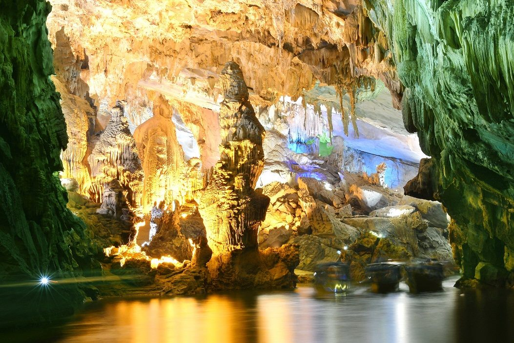
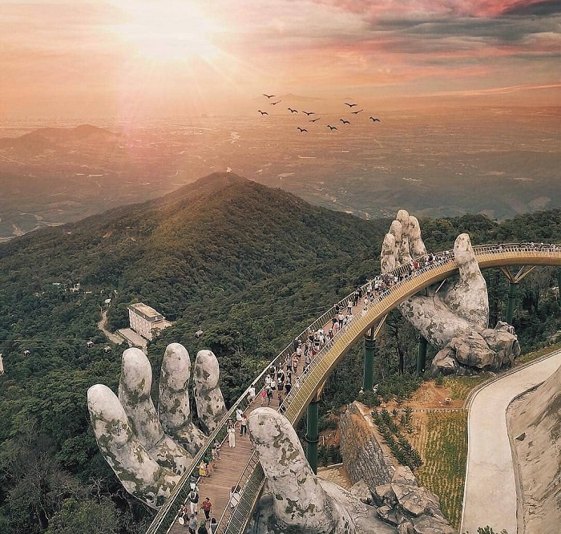

Điểm du lịch Quảng Bình
Nằm ở vùng duyên hải miền Trung, Quảng Bình là địa đến thú vị với bãi biển hoang sơ, hang động độc đáo, núi sông hùng vĩ cùng nhiều món đặc sản thơm ngon. Du lịch Quảng Bình, du khách sẽ được khám phá quần thể hang động Phong Nha - Kẻ Bàng, một trong những di sản thiên nhiên thế giới. Ngoài ra, nơi đây còn có nhiều điểm tham quan khác như cồn cát Quang Phú, hồ Bàu Tró, núi Thần Đinh,... Quảng Bình cũng là quê hương của nhiều món đặc sản dân dã hấp dẫn như cháo canh, bánh bèo, cá trắm sông Son,...
Vẻ đẹp thiên nhiên kì vĩ đến choáng ngợp của “Đệ nhất động”
Điểm du lịch tại Nghệ An
Du lịch Nghệ An thu hút du khách thập phương bởi cảnh quan đẹp mắt, nhiều di tích lịch sử lâu đời như bãi biển Cửa Lò, khu di tích Kim Liên, đồi chè Thanh Chương, thành cổ Vinh, biển Cửa Hội, đảo Lan Châu,... Vùng đất quê hương Bác Hồ còn níu chân du khách bởi những món ngon dân dã hấp dẫn như bánh ngào, súp lươn Nghệ An, miến lươn Nghệ An,... Nơi đây là một trong những điểm du lịch miền Trung thú vị mà bạn không nên bỏ lỡ.
Khu di tích Kim Liên, xã Kim Liên, huyện Nam Đàn, tỉnh Nghệ An
Địa điểm du lịch Huế
Địa điểm du lịch Huế mang vẻ đẹp trầm mặc, mộng mơ cùng nhiều giá trị văn hóa, lịch sử lâu đời. Đến đây, bạn sẽ được chiêm ngưỡng những công trình kiến trúc độc đáo của lăng tẩm, Đại Nội Huế; tham quan các địa điểm du lịch nổi tiếng như cầu Tràng Tiền, núi Ngự Bình, đồi Vọng Cảnh,... Đặc biệt, đừng bỏ lỡ cơ hội ngồi thuyền đi dạo sông Hương, thưởng trà, nghe nhã nhạc cung đình Huế. Và thưởng thức nhiều món ngon đặc sắc đến từ ẩm thực cung đình và ẩm thực dân gian xứ Huế như chè, bánh bột lọc, bún bò, cơm hến,...
Kiến trúc xưa độc đáo của đại Nội Huế thu hút nhiều bạn trẻ đến check in, chụp hình
Địa điểm du lịch Đà Nẵng
Trong hành trình khám phá miền Trung Việt Nam, bạn không thể nào bỏ qua địa điểm du lịch Đà Nẵng. Đây là thành phố của nhiều cây cầu đẹp như cầu sông Hàn, cầu Rồng, cầu Thuận Phước, cầu tình yêu; những bãi biển hoang sơ, thơ mộng như biển Mỹ Khê, biển Non Nước, biển Xuân Thiều,... cùng nhiều thắng cảnh đẹp khác như núi Ngũ Hành Sơn, bán đảo Sơn Trà, Ghềnh Bàng,... Không chỉ có cảnh đẹp, nơi đây còn níu chân du khách bởi nhiều món ngon Đà Nẵng hấp dẫn như bún mắm nêm, bê thui, mì Quảng, cơm gà,...
Cầu Vàng Bà Nà Đà Nẵng nổi bật với lối kiến trúc độc đáo, sáng tạo, là điểm check-in hút đông đảo du khách
Điểm du lịch Đà Lạt
Với cảnh đẹp thơ mộng, khí hậu mát mẻ cùng nhiều món ăn ngon, Đà Lạt là điểm đến hút du khách đầu nước ta. Vẻ đẹp lãng mạn của Đà Lạt khiến bao người mê đắm. Đến đây, đừng quên check in các điểm tham quan nổi bật như núi Langbiang Đà Lạt, hồ Xuân Hương, hồ Tuyền Lâm, đồn điền cà phê Mê FLinh,... Trong cái se lạnh của tiết trời Đà Lạt, những món ngon nơi đây như nem nướng, lẩu mực, bánh ướt lòng gà,... nóng hổi, thơm lừng càng thêm hấp dẫn.
Núi Langbiang Đà Lạt
Địa điểm du lịch Nha Trang
Vẻ đẹp tựa như tranh của địa điểm du lịch Nha Trang để lại ấn tượng khó phai trong lòng du khách. Đến với thành phố biển xinh đẹp này, bạn sẽ được chiêm ngưỡng cảnh quan thiên nhiên tuyệt đẹp của vịnh Vân Phong, vịnh Ninh Vân, đảo Điệp Sơn,... Check in nhiều địa điểm thú vị của thành phố như Hòn Chồng, Tháp bà Ponagar, Viện Hải Dương học,... Đừng quên thưởng thức nhiều món đặc sản thơm ngon như cá nướng ớt xiêm xanh, bún sứa, bánh xèo mực,...